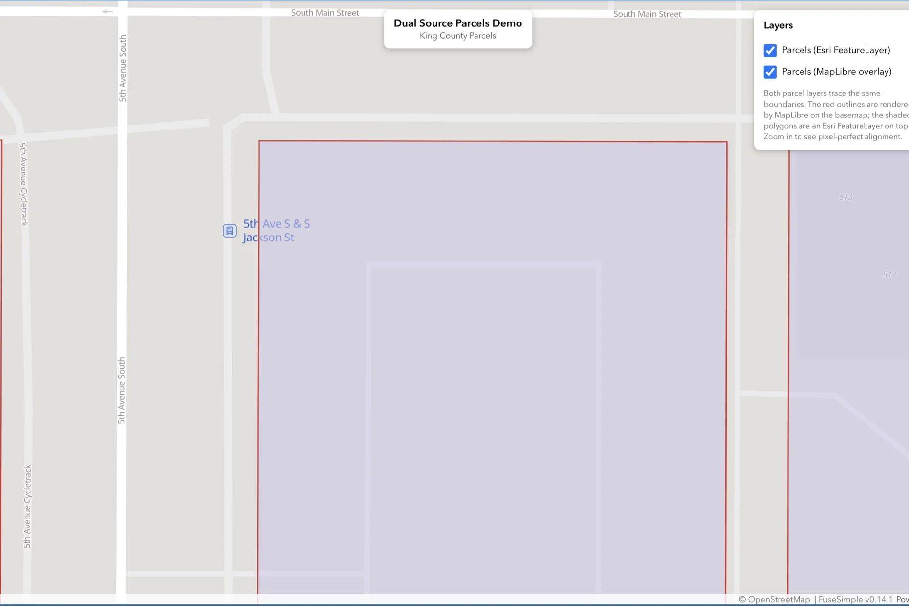
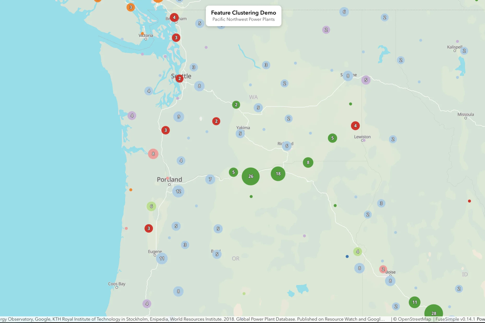
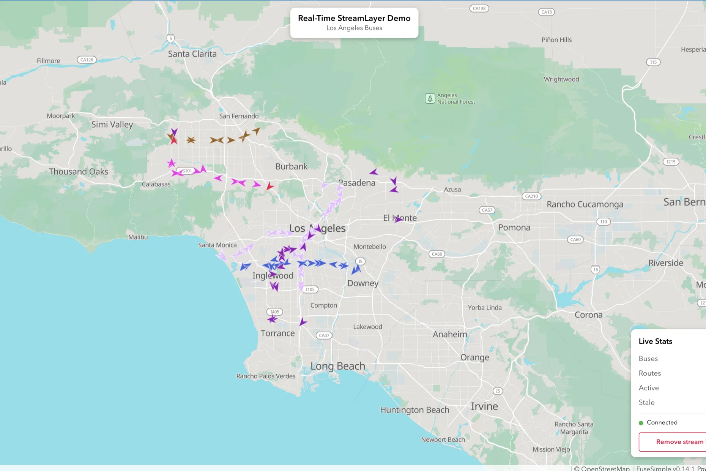

Live demos of PMTiles basemaps under the ArcGIS Maps SDK for JavaScript. Each demo is a single HTML file — view source on any of them to see the full implementation.

Two parcel layers rendered by two different engines over the same geography. Red outlines drawn by MapLibre from GeoJSON, shaded polygons drawn by Esri from a FeatureLayer in ArcGIS Online. Both trace identical King County parcel boundaries. Toggle each independently to confirm pixel-perfect alignment between the two canvases. Uses the <arcgis-map> web component pattern…
King County Parcels

Power plants from ArcGIS Online rendered with Esri's built-in featureReduction clustering on a PMTiles basemap covering Washington, Oregon, and Idaho. Cluster bubbles use Arcade expressions to aggregate coal-fueled plants within each group. Click a cluster to see counts, megawatt totals, and coal ratios in the popup. Shows FuseSimple doesn't interfere with advanced Esri features… PNW Power Plant Clustering

Fictitious LA Metro bus positions streamed via WebSocket from Esri's GeoEvent sample server. Buses render as rotated chevron markers color-coded by route using an Arcade hash. A trail system polls the StreamLayerView and drops faded circles at previous positions. Shows FuseSimple handles the hardest category of Esri layer: live WebSocket data… LA Metro Buses
The tile archives used by the demos above are publicly hosted and free to use for experimentation.
king_county.pmtiles
la.pmtiles
pnw.pmtiles
All hosted at https://tiles.mapsimple.org/.